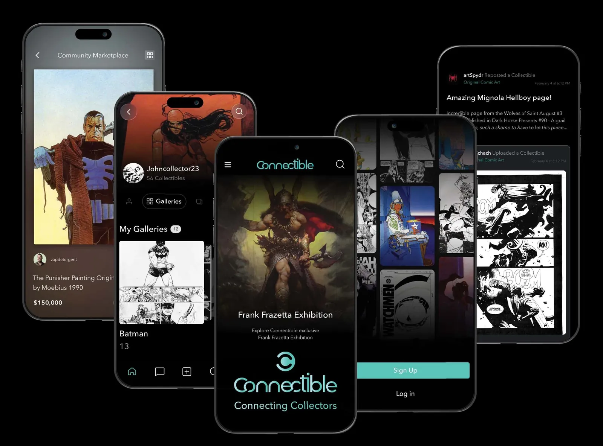
Introduction
Connectible is the world's first social media app for collectors and offers the ability to share, connect, and trade any collectibles they love. The goal is to connect communities together, by enabling collectors to pursue their passion.
My Role
As a Senior Product Designer at Connectible, my primary responsibility was to lead the UX design process for the platform. This role required a deep involvement in every stage of the design, from conceptualisation to implementation, while also playing a key role in project management. Collaborating closely with our CTO (previously with Depop), CMO (from Flo Health, with prior experience at Nextdoor and Depop), and our engineering team, I focused on integrating user feedback at every step.
This commitment to a user-centered design approach was crucial in refining and adapting our platform to meet and exceed user expectations. The success of this methodology is evident in the robust user base we've built, demonstrating the effectiveness of my design strategy in creating a product that resonates with Collectors.
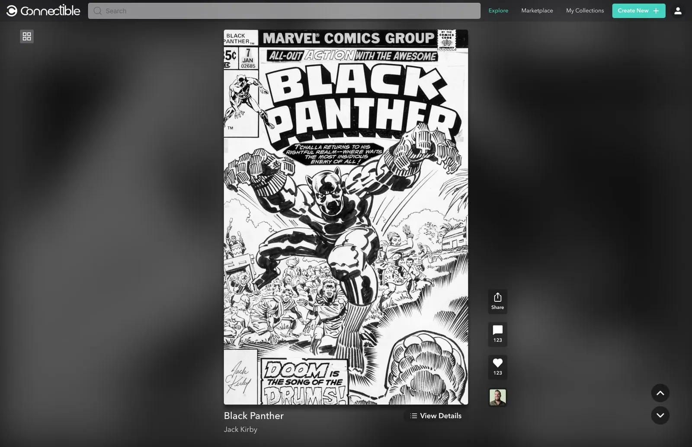
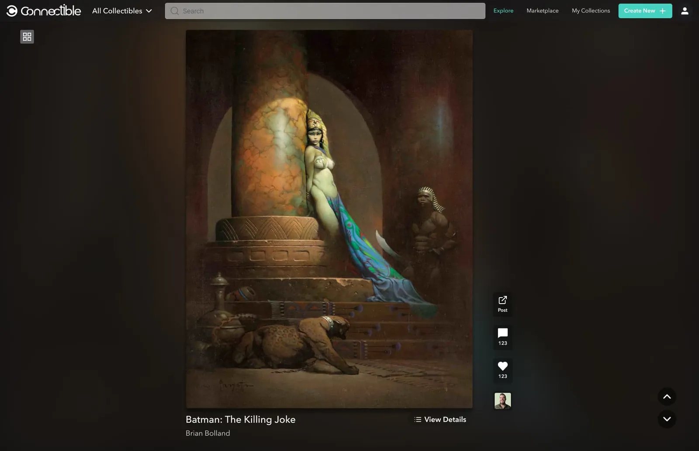
Problem
The world of collectors lacked a platform that was both simple and enjoyable for connecting and socialising with each other. There was a void in the market for collectors seeking validation for their tastes.
Connectible was born out of this necessity.
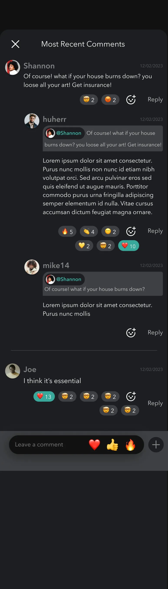
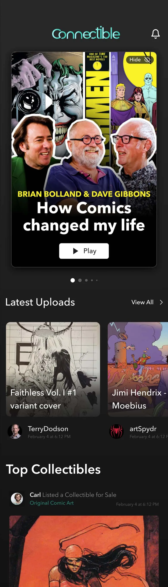
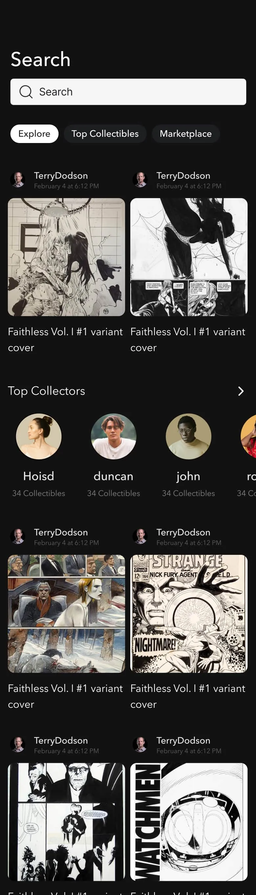
UX Goals
The design of Connectible as a niche multi-community social platform was driven by insights gathered from user research and interviews.
Informed by valuable feedback and research, it became evident that, for collectors, the act of sharing and receiving validation for their collectibles is as important as the ownership of the collectibles themselves. This understanding helped me consolidate the design of the MVP.
Build an Intuitive Platform
Create an easy-to-use platform where collectors can connect in dedicated, gated communities.
Stimulate Interaction
Encourage collectors to react to and rate each other’s collectibles.
Empower Users
Level the playing field and give trading power back to the collectors by eliminating the need for middlemen.
Research
My design process began with a deep dive into market and user research. I focused my efforts on Original Comic Art, a niche with approximately 100,000 collectors worldwide.
Connectible primary competitor is an outdated forum-style gallery website (CAF), which presented the business with the challenge of the cold-start problem. I conducted user research on how to use growth hacks to get a big portion of CAF users before Connectible launch.
The results of this research led me to the conclusion that collectors were not interested in a new and better version of CAF. On the other hand, they were excited to explore a mobile friendly, easy to use app to chat with collectors, scan their art and share it with new communities.
To understand how collectors behave and interact, I conducted extensive user research. Collectors often socialise at comic-cons in real life, but they also use digital platforms like CAF for portfolio display, Facebook, Messenger, and Telegram groups for interaction and engagement. This insight helped us shape the mechanics and usability of our platform, focusing on a human-centered design approach.
Connectible Users
How important is interacting with posts?
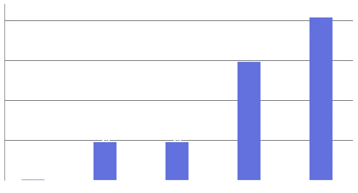
- Collectors that think that interacting with posts and reply to discussions is as important as collecting itself.
- 80%
- Collectors that collect more than 1 collectible
- 80%
- Users want to see latest uploads on Home Feed
- 66%
- Users that prefer interacting instead of browsing
- 50%
Jobs theory
I applied the Jobs Theory to my design thinking, as documented in Clayton M. Christensen’s “Competing Against Luck,” to understand why customers choose certain products over others.
I viewed this job as a mini-documentary about our consumer’s journey to share their collection and gain validation for what they own.
In-depth interviews with consumers and non-consumers helped me identify the goals, struggles, and obstacles that collectors face.
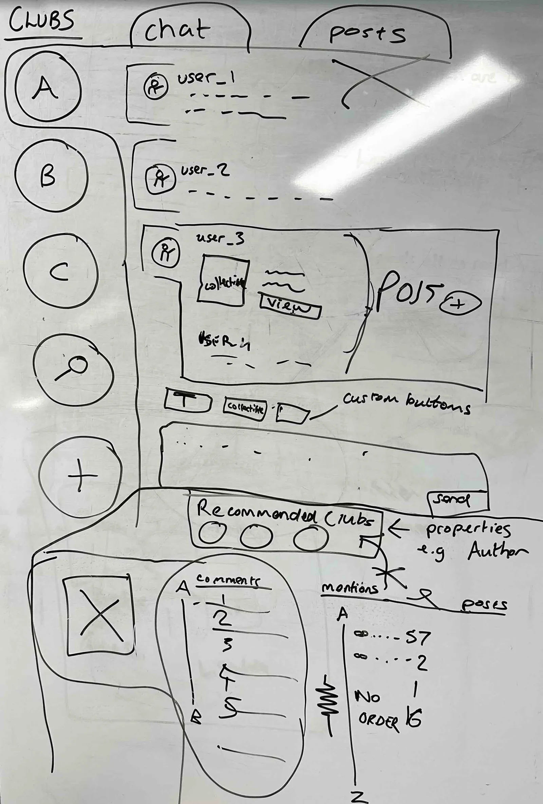
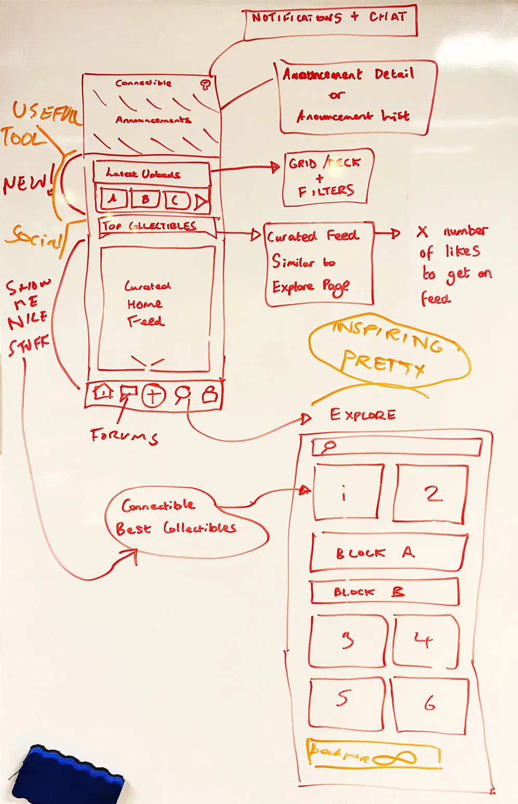
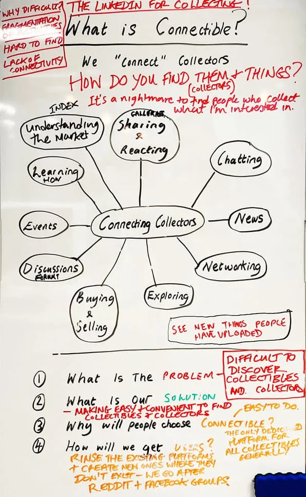
- Daily active users
- +88%
- User Retention
- +46%
- User growth
- +60%
- monthly interactions
- +67%
Metrics
Design Results
Through a iterative design approach, the improvements resulted in a monthly increase of 67% in user interactions. The integration of new features, such as "comment previews" and "replies to comments", led to collectors sending an impressive 1.5 additional comments and messages daily.
We also had a surge in daily active users by 88% when the user started getting in-app notifications and toasts alerts every time they were engaging with each other.
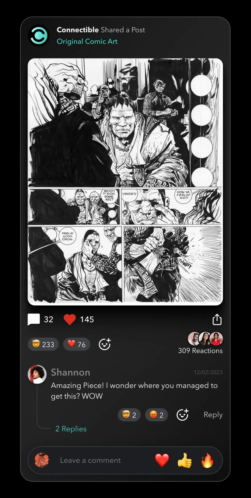
Future Iterations
The design focus is shifting towards "clubs" and small niche groups. I aim to highlight the discussion-style area over the "latest-uploads feed" and encourage users to create discussions instead of merely showcasing their collections without interacting with each other.
I perfected reactions for comments and replies in threads to comments allowing users to make the most out of discussions.
This iterative process, driven by user feedback, has been instrumental in shaping Connectible into the platform it is today.
Project Takeaways
Connectible has taught me the pivotal lesson that even users with obsessive personalities won't adopt a platform unless it fulfils a specific job for them, prompting them to "hire" the product and discontinue usage of alternatives.